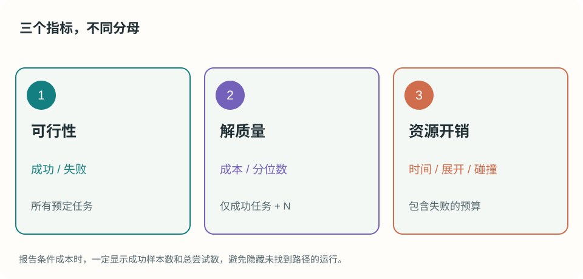
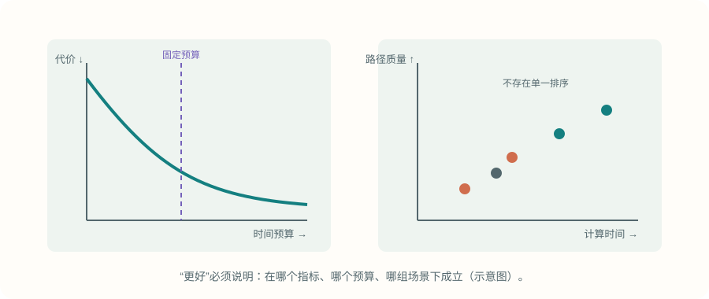
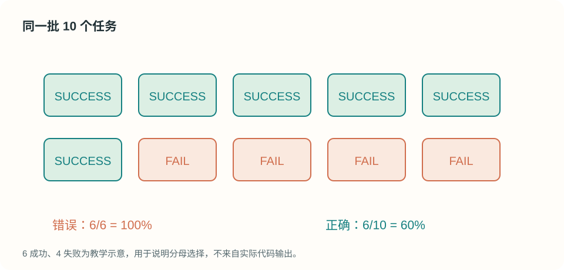
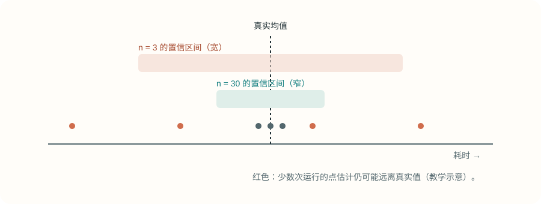

算法性能基准测试：为什么“快了一倍”多半是错觉
采样算法的单次运行差异可能有数倍。若只跑三次就宣布“优化后快一倍”，多半是把随机波动当成了性能提升。本章讲清多维度指标、场景与预算、公平对比，以及必须报告种子、置信区间与失败样本的理由。
为什么“快了一倍”多半是错觉
“我优化后的规划器比原来快了一倍”——如果这个结论来自三次运行，它几乎不可信。基于采样的算法（RRT、PRM 及其变体）对随机数高度敏感：同一张地图、同一个起点终点，两次运行的耗时和路径长度可以相差数倍。若只跑少量试验，你观测到的可能只是噪声，而不是算法差异。
确定性算法（Dijkstra、A*）的结果虽然固定，但计时仍受系统负载、缓存、编译优化影响，因此也不能只看单次结果。基准测试的第一条纪律是：把“性能”当分布，而不是当数字——报告均值、波动、样本量与失败次数。
评价指标体系
路径规划的“好”是多维的，只用一个指标评价会让结论偏颇。常用指标：
| 指标 | 单位 | 含义 | 注意事项 |
|---|---|---|---|
| 路径长度 | 米 / 栅格数 | 起终点之间的总路径长度 | 最短不等于最优，需与平滑、安全一同看 |
| 计算时间 | 毫秒 | 从调用到返回路径的耗时 | 区分单次与分布，排除解释器/编译开销 |
| 成功率 | % | N 次试验中找到可行路径的比例 | 与地图难度强相关，必须附地图信息 |
| 平滑度 | 曲率 / 转角 | 转弯的剧烈程度 | “平滑”难用单一数值量化 |
| 内存峰值 | MB | 运行中的峰值内存 | 区分实现语言与运行环境 |
| 扩展节点数 | 个 | 搜索中访问的节点数 | 比计时稳定，不受 CPU 调度影响 |
这些指标不能桅在同一个分母下。它们分属三个维度，各自的“分母”不同：可行性用全部预定任务，解质量只在成功样本上统计，资源开销则要包含失败的预算。
BENCHMARK · 24

BENCHMARK · 24

不要把路径长度当作算法基准的单一分数。同一个“路径长度”在不同代价地图（第 4 章的三套代价体系）下不可直接比较；把它当作“算法 benchmark”需要固定地图、代价定义与预算。
测试场景与预算
只在一种地图上测试，得到的结论只对这种地图成立。一套可用的测试集至少应覆盖不同类型的结构：
- 狭窄通道——测试算法能否处理约束瓶颈；
- 稠密障碍——测试高复杂度环境下的搜索效率；
- 迷宫——测试探索策略与避免死胡同的能力；
- 开阔平原——测试基线表现与路径质量；
- 随机杂乱——模拟真实场景的不可预测性。
每次试验必须记录地图生成种子与算法随机种子，否则别人无法复现你的分布。对于 anytime 算法（RRT*、PRM 等），“运行 10 ms”与“运行 1000 ms”是完全不同的问题：要么固定时间预算，要么画出完整的“时间—质量”曲线。
报告一次实验的完整信息应包括：地图族与种子、机器人模型与代价定义、算法参数、时间/迭代预算、试验次数、成功与失败次数。缺任何一项，结论都无法被他人复现或反驳。
公平对比原则
不公平的对比比不对比更糟，因为它会给出错误的结论。几条实际操作原则：
- 同一硬件与同一实现层次：尽量在同一台机器上测；跨机器时用归一化指标（例如以同机器上的基准算法耗时为分母的相对比值）。
- 同一时间/迭代预算：对比采样算法时固定预算，或在等预算下对比质量曲线，而不是让一个算法跑到它恰好找到解为止。
- 同一起点终点与代价定义：地图、代价地图与碰撞判定完全一致，避免“差异来自评测而非算法”。
- 热启动与冷启动分开计：预热、编译、字典加载等一次性开销不要混进单次规划时间。
一个容易被忽略的点：“失败样本”不能剔除。如果某算法在难地图上频繁超时，只统计成功样本的平均值会人为地把它美化。正确做法是把超时/失败计入失败率，或在固定预算下给失败样本赋一个明确的、最坏的代价。
统计显著性与失败样本
采样算法具有很强的随机性，用单个数字（尤其单次运行）下结论不可靠。报告一个差异时至少需要：
- 样本量：对随机算法建议几十次以上，并注明是同一个算法种子还是不同种子；
- 分布信息：均值、标准差或分位数（如中位数与四分位距），并配直方图/箱线图；
- 不确定性：用置信区间而不是只给点估计；差异是否统计显著，应由 t 检验或 Mann-Whitney U 检验等给出，而不是凭“看起来更快”；
- 失败样本：把超时/无解计入失败率，不剔除；否则平均值会被系统性美化。
最常见的分母错误就是把失败样本从统计里去掉，只对成功样本求平均。考虑一批 10 个任务：6 个找到路径，4 个超时未找到。
BENCHMARK · 24

把算法跑成分布之后，还要注意“显著”不等于“有用”：在海量试验下，一个微小的差异也可能统计显著，但它可能小到在工程上没有意义。统计显著性与实际影响要分开陈述。
BENCHMARK · 24

OMPL（The Open Motion Planning Library）内置了一套基准测试框架，把规划请求、规划器与输出分离，方便批量运行、记录分布与可视化对比。它的设计可以当作自己搭 benchmark 的参照。
交互：样本量与波动
同一个真实均值下，样本量越小，置信区间越宽。切换 “n=3” 与 “n=30”，看区间宽度的变化——这正是为什么三次运行不能支撑一个性能结论。
n = 3：置信区间很宽，单次波动足以覆盖任何“提升”。
图为示意，区间宽度与正文示例的数值不一致，仅用于说明趋势。
可运行的置信区间示例（Python 3.10+）
下面用固定的一组“耗时”测量（30 次）演示：用前 3 次与前 30 次分别做 bootstrap 置信区间，样本越多区间越窄。存成 bench_demo.py，运行 python3 bench_demo.py，断言应当通过。
import random # Python 3.10+
RUNS = [31,42,28,55,19,37,48,26,33,61,24,45,30,52,27,
35,40,29,57,22,38,47,25,34,50,31,43,26,39,44]
def bootstrap_ci(data, iters=2000, level=0.95, seed=0):
rng = random.Random(seed) # 固定种子，结果可复现
n = len(data)
means = []
for _ in range(iters):
means.append(sum(rng.choice(data) for _ in range(n)) / n)
means.sort()
lo = means[int((1 - level) / 2 * iters)]
hi = means[min(iters - 1, int((1 + level) / 2 * iters))]
return lo, hi
ci3 = bootstrap_ci(RUNS[:3])
ci30 = bootstrap_ci(RUNS[:30])
assert ci30[1] - ci30[0] < ci3[1] - ci3[0] # 样本越大，区间越窄
print(f"n=3 CI width {ci3[1]-ci3[0]:.2f}; n=30 CI width {ci30[1]-ci30[0]:.2f}")
# 输出：n=3 CI width 14.00; n=30 CI width 7.97
这个例子只说明“不确定性随样本量下降”这一点；它不证明任何两个算法之间的差异。断言固定了种子（seed=0）因此可复现，而真实实验里应报告随机算法的多种子分布，而不是只调一个安全种子。
边界条件
- 指标必须同单位、同代价定义：不同代价地图（概率占据 / OccupancyGrid / costmap_2d）下的“路径长度”不可直接比较，benchmark 必须固定评测契约。
- 显著不等于有用：大样本下微小差异也可能统计显著；报告时同时给出效应大小（差多少、相对多少）。
- anytime 算法必须说明预算：不说时间预算的“质量”没有意义；应给出时间—质量曲线而不是单点。
- 计时受环境影响：硬件、编译器、解释器、缓存、后台负载都会影响耗时；跨环境时用归一化指标。
- 失败样本不可剔除：否则平均值被系统性地美化；应报告失败率或在固定预算下给失败一个明确的最坏代价。
不要把样例路径长度或单张地图上的表现当作算法 benchmark。一个可复现的结论 = 地图族与种子 + 模型与代价 + 算法参数 + 预算 + 试验次数 + 成功/失败次数。
来源与实现参照
- Sucan, Moll & Kavraki (2012), The Open Motion Planning Library, IEEE Robotics & Automation Magazine 19(4)——分离规划请求/规划器/输出的基准测试框架。
- Salzman (2019), Sampling-based Robot Motion Planning, Communications of the ACM 62(4)——采样算法的随机性与评估方法综述。
- Efron & Tibshirani, An Introduction to the Bootstrap（教材）——bootstrap 重采样与置信区间。